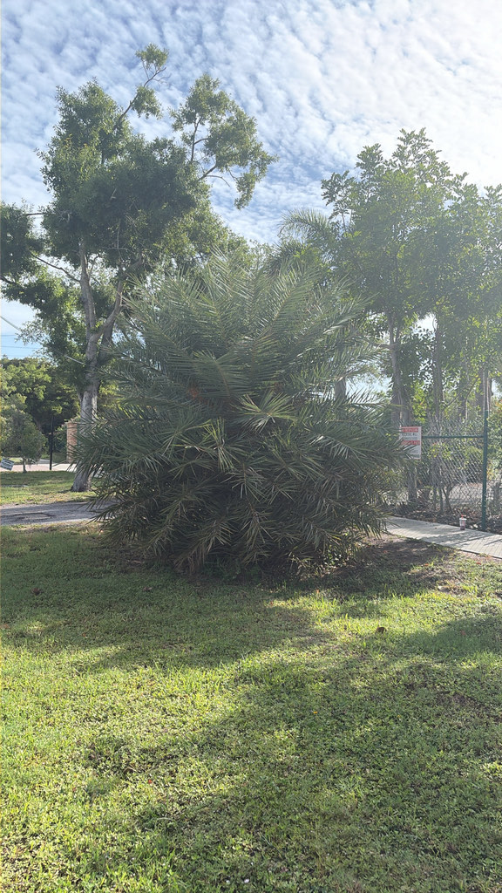

- In India and Bangladesh, people have tapped this palm for centuries for its sweet sap. The sap is collected in winter, then used fresh, boiled into palm jaggery, or fermented into toddy — making Silver Date Palm the source of one of Bengal's most distinctive food traditions.
- Like all date palms, every Silver Date Palm is either male or female, and you cannot tell which until it flowers. Only a female with a male nearby will ever set fruit.
- The sharp spines near the base of each frond are not thorns — they are actual modified leaflets, called acanthophylls. The palm has simply repurposed its own lower leaflets into needles.
- Silver Date Palm is one of the closest living relatives of the cultivated date palm, Phoenix dactylifera — close enough that hybrids between the two have been documented in India.
Native to the Indian subcontinent, where it grows in open country, scrub and seasonally wet lowlands. Sources differ on the precise limits of its natural range, and centuries of cultivation have blurred them further.
It reached Florida as an ornamental and is now one of the most widely planted palms in the state's landscapes.
Birds disperse its seeds locally, but the species has not established invasive populations in Florida's natural areas.
- In India and Bangladesh this palm has been tapped for its sweet sap for centuries. The sap runs in the cool months and is drunk fresh, boiled down into palm jaggery, or left to ferment into toddy. In Bengal that jaggery underpins an entire winter tradition of sweets — the same tree that stands in Florida landscapes for its silver crown feeds a food culture half a world away.
- It is also one of the closest living relatives of the cultivated date palm, Phoenix dactylifera. The fruit tells you why the two are not interchangeable: the same shape and the same ripening colours, but a thin layer of flesh where a date has a thick sweet one.
Birds eat the fruit and are the palm's primary seed dispersers. Flowering palms are also visited by bees and other insects. In Florida its wildlife value is mainly as a source of fruit, shelter, and perching sites rather than as a specialist host plant.
Propagation is by seed. Phoenix sylvestris is dioecious: male and female flowers are borne on entirely separate trees. A female will only set fruit if a pollen-producing male is somewhere nearby. Wind carries the pollen from male to female inflorescences; bees also visit and assist.
Small and white, produced in large numbers on branching, pendant inflorescences roughly one to three feet long that emerge from among the leaf bases. Flowering generally occurs in spring.
Clusters of small oval drupes, roughly an inch long, each with a single hard seed under a thin layer of flesh. They ripen from orange to dark red or purple. Edible, but the flesh is thin and far less sweet than a commercial date.
Pinnate (feather-type), arching, and blue-green to silver-green — the silvery cast is the most obvious visual difference from the Canary Island Date Palm. Fronds can reach nine to ten feet in length on mature specimens.
Solitary, with a characteristic swollen base. The trunk surface is patterned with closely spaced, diamond-shaped leaf scars left as old fronds fall away — a texture that makes this palm instantly recognizable.
The silver-green colour of the fronds is the first thing to notice — bluer and more silvery than most palms in the collection. Look down toward the base of each frond for the stiff, yellow-green spines set along the petiole. On the trunk, find the diamond-shaped leaf-scar pattern and the swollen base.
If the palm is in fruit, look for hanging clusters of small oval drupes ripening from orange through dark red or purple. Set it beside a Canary Island Date Palm and the difference in colour is immediate.
The lower leaflets of each frond are rigid and needle-sharp. Keep hands and faces away from them, and take care walking or working close to the palm. The concern here is the spines, not toxicity.
Silver Date Palm is susceptible to lethal yellowing and lethal bronzing — both serious phytoplasma diseases of palms with no cure. Lethal bronzing was first detected in Florida in the Sarasota-to-Tampa corridor, and Phoenix sylvestris was among the original host species identified. An infected palm can die within months of the first symptoms appearing.
Phoenix species hybridize readily, and hybrids involving Silver Date Palm and the cultivated date palm have been documented in India. Hybridization can complicate identification, and a specimen labelled Silver Date Palm in cultivation may occasionally be a hybrid rather than a pure species.


- © Ruby Meador (CC-BY-NC), via iNaturalist